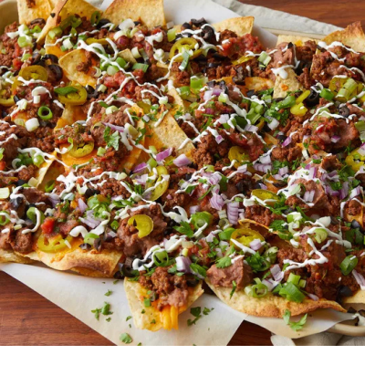

Super Nachos

Nachos that are quite super
Super Nachos are a crowd-pleasing dish that elevates any gathering with layers of
flavor and texture. Start by spreading a generous amount of crispy tortilla chips
on a large platter, then top them with seasoned ground beef and creamy canned
refried beans for a hearty base. Sprinkle a generous layer of shredded Cheddar
cheese over the top and pop it in the oven until the cheese is melted and bubbly.
Once out, add a vibrant mix of chopped tomatoes, sliced jalapeño peppers, and canned
black olives for a fresh crunch. Drizzle with zesty salsa and dollops of sour
cream, then finish with a sprinkle of sliced green onions for a burst of flavor.
For an extra twist, consider adding shredded chicken, barbacoa, or guacamole, along
with toppings like cotija cheese, corn, pico de gallo, shredded lettuce,
diced onions, or pickled red onions to customize your nachos to perfection!
Ingredients
- 1 lb Ground Beef
- 3/4 Cup of Water
- 1 Package Taco Seasoning
- 1 Cup shredded cheddar cheese, or to taste
- 1 Can (15.5 Ounces) Refried Beans
- 1 Can (10 Ounces) Sliced Black Olives
- 1 Cup Salsa
- 4 green onions, diced
- 1 Can (4 Ounces) Jalepeno Peppers
Directions
- Preheat the oven broiler. Set the oven rack about 6 inches from the heat source. Line a baking sheet with aluminum foil.
- Gather all ingredients.
- Cook and stir ground beef in a skillet over medium heat until meat is crumbly and no longer pink, 5 to 10 minutes. Drain excess grease. Stir in water and taco seasoning mix; simmer until beef mixture has thickened, 8 to 10 minutes.
- Spread tortilla chips on the prepared baking sheet. Top with Cheddar cheese, then dot with refried beans and ground beef mixture.
- Broil in the preheated oven until cheese is melted, 3 to 5 minutes. Top nachos with olives, salsa, sour cream, green onions, and jalapeño peppers.